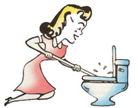
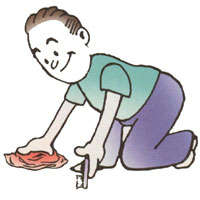

Do you want to save some money on household cleaning products? Try these recipes. Most work as well as, or better than, the store-bought brands, but are cheaper (sometimes a lot). As a bonus, most are also much more environmentally friendly than their mass-market counterparts.
1/2 cup cornstarch
2 quarts warm water
clean, soft rags
Dissolve cornstarch in the warm water. Wipe on with a soft cloth or sponge. Use another soft cloth to dry and buff. Don't use this cleaner in direct sunlight or on a hot appliance or the cornstarch will leave streaks.
This product will do a good job for everyday cleaning of other appliances, too.
4 cups warm water
4 teaspoons washing soda*
1/4 teaspoon ammonia
clean, soft rags
Stir the ingredients together in a non-aluminum container until the washing soda is dissolved.
Wipe on with a soft cloth then dry with another. This product is good for times when the cleaner and shiner doesn't quite give the results you want. It has worked well for me on walls, too, but you should try it on some out-of-the-way spot first, just to be sure it won't harm your paint.
Since the soda tends to settle out, it's a good idea to mix up a fresh batch every time you need it.
*washing soda (Hydrated Sodium Carbonate) is not the same as baking soda (Sodium Bicarbonate). You can find it at most grocery stores near the Borax.
Sprinkle borax, baking powder, or dry table salt on a damp rag; scour and rinse. Salt is more abrasive than the other two, so use it accordingly.
OK, here's a well kept secret about cleaning toilets. Most of the time, I use only a toilet bowl brush and some toilet paper to clean the porcelain throne. I just scrub with the brush, and wipe down the outside with paper. Then I wipe down the seat with some General Household Cleaner and Disinfectant (see above). When I'm done, the most popular seat in the house looks great (well, for a toilet bowl).
For more stubborn stains, first pour a bucket of water into the toilet to lower the water level. Then swish the toilet bowl brush around to wet the bowl surface. Sprinkle well with borax and let stand for at least 30 minutes; overnight is better. Leave the lid up and the toilet bowl brush in (with the handle pointing toward the back) both as a reminder to finish cleaning before using, and also to clean the brush. The final step is to scrub the stain away. Flush. Fini!
1 part vinegar
1 part borax
2 parts warm water clean rag
Mix the vinegar, borax, and water. Moisten the rag and wipe down the area to be cleaned. Let the mixture work for about ten minutes, then rinse. Adjust the amounts you use so that you can make up a fresh batch each time you need it.
Send your tips to "Country Lore," Mother Earth News, P.O. Box 129, Arden, NC 28704, or to MEarthNews@aol.com . We'll send you a T-shirt in return, but please remember to include your address, a photo, and a phone number. (Don't worry, we won't give out your number.)
|
 |
 |
|